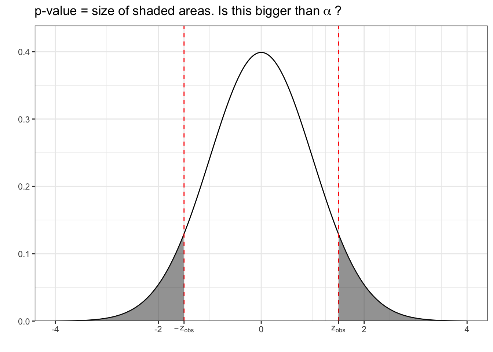
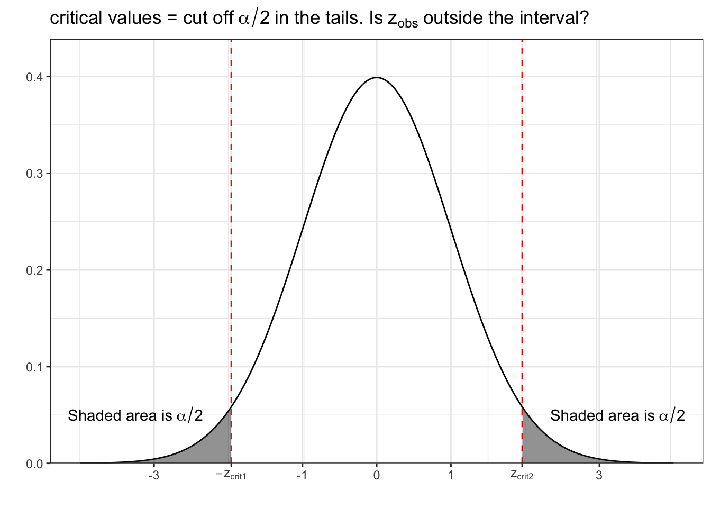

14 Introduction to Confidence Intervals
The statistical hypothesis test approach to trying to answer research questions is in many ways a rather destructive and inefficient approach – destructive as we can only reject hypotheses in favor of another, and inefficient as the rejection is based on a single possible value. A confidence interval, although related to the hypothesis tests seen in the previous section, is a much more useful way of answering research questions. Here, we do not seek to reject any particular potential value, but rather provide a range of values that, given the data, we think includes the true value.
The backbone of the confidence interval is a statistical test. In fact, most confidence intervals (at least all that we will see in this class) is “simply” the range of values that the corresponding test would NOT reject. To see how this works, we will consider the simplest test, the one-sample z-test, but note that the procedure is the same for all the tests.
In the one-sample z-test, we assume that we have a sample of independent observations of continuous random variables for which we know the true standard deviation \(\sigma\). Furthermore, we need the sample average \(\bar{X}\) to be normally distributed. (This happens if a) the data itself is normally distributed, or b) the sample size is greater than \(30\).) Since \(\bar{X}\) is normally distributed, we know that \(Z = \frac{\bar{X} - E(\bar{X})}{\text{SD}(\bar{X})} \sim N(0,1)\). Since \(\sigma\) is known, we know that \(\text{SD}(\bar{X}) = \frac{\sigma}{\sqrt{n}}\). We are interested in testing the null hypothesis \(H_0: \mu = \mu_0\) against the alternative \(H_A: \mu \neq \mu_0\). Assuming that the null hypothesis is true, \(E(\bar{X}) = E(X_i) = \mu_0\), and so \(Z = \frac{\bar{X} - \mu_0}{\sigma/\sqrt{n}} \sim N(0,1)\) IF \(H_0\) is true.
To judge if \(H_0\) seems plausible, we calculate the observed value of \(Z\) by simply plugging in the observed average: \(z_\text{obs} = \frac{\bar{x} - \mu_0}{\sigma/\sqrt{n}}\). If this value is large (in absolute value, i.e. “far from zero”), then the observed value of the sample average \(\bar{x}\) is far from \(\mu_0\), and therefore we reject the idea that \(\mu_0\) is the true population mean. To assess if \(z_\text{obs}\) is “far from zero”, we calculate the probability of observing a value of \(Z\) that is even further from \(0\) if \(H_0\) is true. This probability is called the p-value. We then proceed to reject the null hypothesis if the p-value is smaller than some pre-specified value, often denoted \(\alpha\), which is called the significance level.

What we haven’t talked about yet is a different way of drawing the conclusion. Instead of calculating the probability of observing something “further away from 0”, we can find the cut-off points (called critical values) that cut off \(\alpha\) in the tails of the curve. We then reject if our observed value of the test statistic \(z_\text{obs}\) is outside of the interval given by the critical values.
Say that we choose \(\alpha = 0.05\). In this case, the critical values are \(\pm 1.96\). So, we would reject the null hypothesis if \(z_\text{obs}\) is smaller than \(-1.96\) or greater than \(1.96\).

It’s important to note that the two approaches will lead to the same conclusion: if the p-value is smaller than \(\alpha\), then the observed value is outside the interval defined by the critical values, and vice versa. But this second approach allows us to clearly describe all the values that would NOT lead us to reject the null hypothesis: namely the values between \(z_\text{crit,1}\) and \(z_\text{crit}\). In more mathy terms, if \(z_\text{crit,1} < z_\text{obs} < z_\text{crit,2}\) we won’t reject the null hypothesis. Since \(z_\text{obs} = \frac{\bar{x} - \mu_0}{\sigma/\sqrt{n}}\), we can then find all the values of \(\mu_0\) that would NOT be rejected! This is simply all values of \(\mu_0\) that results in \(z_\text{obs}\) being greater than \(z_\text{crit,1}\) AND smaller than \(z_\text{crit,2}\). Looking at the first inequality, i.e. \(z_\text{crit,1} < z_\text{obs}\), we see that \(\mu_0\) must be satisfy the following:
\[\begin{align*} z_\text{crit,1} & < z_\text{obs} &\iff \\ z_\text{crit,1} & < \frac{\bar{x} - \mu_0}{\sigma/\sqrt{n}} &\iff \\ z_\text{crit,1}\sigma/\sqrt{n} & < \bar{x} - \mu_0 &\iff \\ \mu_0 + z_\text{crit,1}\sigma/\sqrt{n} & < \bar{x} &\iff \\ \mu_0 < \bar{x} - z_\text{crit,1}\sigma/\sqrt{n} & \end{align*}\]
Looking at the second inequality, i.e. \(z_\text{obs} < z_\text{crit,2}\), we see that \(\mu_0\) must be satisfy the following:
\[\begin{align*} z_\text{obs} &< z_\text{crit,2} &\iff \\ \frac{\bar{x} - \mu_0}{\sigma/\sqrt{n}} &< z_\text{crit,2} &\iff \\ \bar{x} - \mu_0 &< z_\text{crit,2} \sigma/\sqrt{n} &\iff \\ \bar{x} &< \mu_0 + z_\text{crit,2} \sigma/\sqrt{n} &\iff \\ \bar{x} - z_\text{crit,2} \sigma/\sqrt{n} &< \mu_0 & \end{align*}\]
So all values of \(\mu_0\) that fall between \(\bar{x} - z_\text{crit,2} \sigma/\sqrt{n}\) and \(\bar{x} - z_\text{crit,1} \sigma/\sqrt{n}\) would not be rejected. We call this interval a \((1-\alpha)\cdot 100 \%\) Confidence Interval. If \(\alpha = 0.05\), as it often is, then this turns out to be a \(95\%\) Confidence Interval for \(\mu\) (the true population mean). We say that we are \(95\%\) confident that the true value is in this interval.
14.1 FAQ
14.1.1 You’re telling me there are TWO critical values?
Yes, there are actually two critical values. However, whenever the distribution we’re looking at is symmetrical, the two critical values are actually just plus/minus one value. For example, if we’re constructing a one-sample z confidence interval with confidence \(95\%\), the critical values are \(\pm 1.96\). This also means that the confidence interval takes on a bit simpler form: \(\bar{x} \pm 1.96\cdot \sigma/\sqrt{n}\).
14.1.2 Where does the “95%” come from?
Remember how the sample average \(\bar{X}\) is a random variable with a distribution? In the same vein, you can consider the confidence interval as a random variable. Again, we’ll use the one sample Z confidence interval as an example: \((\bar{X} - 1.96 \cdot \sigma/\sqrt{n},\ \bar{X} - 1.96 \cdot \sigma/\sqrt{n})\). You can then ask, before performing the experiment, what is the probability the true value \(\mu\) is contained in the interval?
\[\begin{align*} P(\bar{X} - 1.96 \cdot \sigma/\sqrt{n} &< \mu < \bar{X} + 1.96 \cdot \sigma/\sqrt{n}) \\ &= P(\mu < \bar{X} + 1.96 \cdot \sigma/\sqrt{n}) - P(\mu < \bar{X} < 1.96 \cdot \sigma/\sqrt{n}) \\ &= P(\mu - 1.96 \cdot \sigma/\sqrt{n} < \bar{X}) - P(\mu - 1.96 \cdot \sigma/\sqrt{n} < \bar{X}) \\ &= P(-1.96 \cdot \sigma/\sqrt{n} < \bar{X} - \mu) - P(\bar{X} - \mu < 1.96 \cdot \sigma/\sqrt{n}) \\ &= P(-1.96 < \frac{\bar{X} - \mu}{\sigma/\sqrt{n}}) - P(\frac{\bar{X} - \mu}{\sigma/\sqrt{n}} < 1.96) \\ &= P(-1.96 < Z) - P(Z < 1.96) \\ &= [1 - P(Z < -1.96)] - P(Z < 1.96) \\ &= 1 - \alpha/2 - \alpha/2 = 1 - \alpha. \end{align*}\]
So the probability that a confidence interval constructed in this way contains the true value is \(1-\alpha\). If \(\alpha = 0.05\), then \(P(\text{CI contains true value}) = 0.95\). Hence, we call it a \(95\%\) Confidence Interval, and say “we are 95% sure the true value lies in the confidence interval”.
14.1.3 Why can’t we say there’s a 95% chance that the true value is in a 95% Confidence Interval?
This is one excellent question! We just saw above that the probability that a confidence interval constructed in this way contains the true value is \(1-\alpha\), so why not say the true value is in the confidence interval with probability \(1-\alpha\)?
Any statement about probabilities has to deal with some randomness. Once you’ve conducted your experiment, all the randomness is gone. You have one fixed value for your lower bound, and one fixed value for your upper bound. I.e. nothing is random anymore. And although we do not know what the true value is, it is a fixed value, and not random.
Say you performed your experiment and got a confidence interval for \(\mu\) of \((26, 35)\). If you were to think about something like \(P(26 < \mu < 35)\), you would run into the exact problem mentioned above: there are no random variables involved. Actually, this probability is either \(1\) (\(\mu\) happens to be in the interval), or \(0\) (\(\mu\) happens to NOT be in the interval), but we will never know if it’s one of the other.
14.1.4 Follow-up: But why even bother with a confidence interval, then?!?!?!
Although we cannot say anything about one single confidence interval, we still know that if we were to repeat the experiment many, many times constructing confidence intervals in this way each time, (and our assumptions are correct) then \(95\%\) of the constructed confidence intervals will contain the true value! Yet another reason to repeat experiments rather than draw conclusions based on a single one.